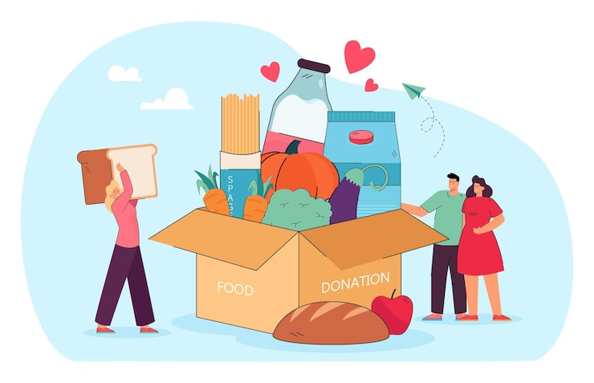

Alimento para Todos
Distribuímos cestas básicas e refeições para famílias em situação de vulnerabilidade social.
A Rede Solidária é uma organização sem fins lucrativos dedicada a conectar pessoas dispostas a ajudar com projetos sociais que transformam vidas. Nosso objetivo é fortalecer comunidades por meio da solidariedade, do voluntariado e da empatia.
Conheça algumas das iniciativas que fazem a diferença em diversas comunidades:
Distribuímos cestas básicas e refeições para famílias em situação de vulnerabilidade social.
Oferecemos oficinas gratuitas de reforço escolar e alfabetização para crianças e adultos.
Promovemos feiras de adoção e campanhas de vacinação para animais abandonados.
12
248
R$ 12.000